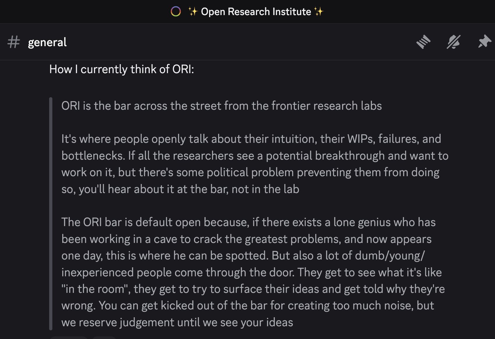

ORI is the "open research institute". Its purpose is to map the frontier of human knowledge & maintain the fastest highway from it to the backtier, and back
ORI is currently a live experiment in improving the culture of science & its communication (for researchers and laypeople alike). It is maintained & funded by Prosocial Engineering.

How to join
- Learn about the A/B/U review system
- Write an explanation of the system & its purpose in your own words. See example 1 by Omar, example 2 by Alex
Alternatively your ORI entry point may be any piece of information that you feel is important to propagate, see example: "Meta Economics" & recursive resource allocation
- Calibrate with others, finds your peers. (1) Look up to the frontier to find mentors & sources of A's, until you build your chain all the way to the top. (2) Look down to the backtier to see where problems exist that we already have solutions for, and go apply them & make money
Tip: watch the first minute of "How to semantic search the internet". You don't to have a large audience to get feedback, or have your ideas reach people on the frontier. You just need to follow the best positive sum protocol we've found so far: every node in the network calibrates the shared epistemic highway, so that information, and capital resources, flow cleanly up & down the hierarchy of society
Successes / Portfolio
TODO
- InterBrain - How Collective DreamWeaving Can Heal The World was funded by ORI ($9k in 2025)
ORI staff / volunteers
- Defender is acting as CEO/director/lead PI of the lab. He is also running the parent Prosocial Engineering entity. One of his main projects at ORI developing & testing a method for launching new scientific fields.
- Sam Senchal & Suntzugi are working on establishing a "mettalignment" department. This will act as the guiding moral compass of the org.
- Ben G, Eval, & Benjamin Isaac are day to day ORI staff volunteers who work on ORI itself and manage our portfolio of active projects.
- Patcon is doing a fellowship/residency. He is our liason to the civic tech in Toronto & broader networks.
- Karol is volunteering to advise on money, resource allocation, and governance. How to run an org in a bottom up way as described by Frederic Laloux.
Friends / Collaborators / Competitors
- Innovation Lens by Jonah Lynch is a system that can track the evolution of knowledge, and predict where attention & resource allocation may trigger the next big breakthrough
- Semble and Discourse Graphs are both attempts to create systems of collaborative knowledge building & tracking & rewarding intellectual contributions
- Adam Mastrionni & Slime Mold Time Mold maintain open science communities with high standards for rigor
- Rebel Epistemographer - anonymous ex-Cornell sociology/ethics professor.